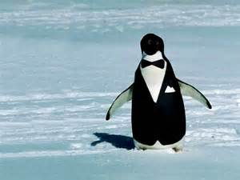

Penguins (order Sphenisciformes, family Spheniscidae) are a group of aquatic, flightless birds. They live almost exclusively in the Southern Hemisphere, with only one species, the Galapagos penguin, found north of the equator. Highly adapted for life in the water, penguins have countershaded dark and white plumage, and their wings have evolved into flippers. Most penguins feed on krill, fish, squid and other forms of sea life which they catch while swimming underwater. They spend roughly half of their lives on land and the other half in the sea.
Penguins are sleek and agile, and are always dressed like they are ready to party.
